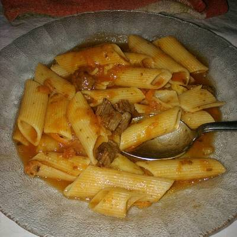

Guiso de Fideos

Descripcion
Un guiso es la cocción en un medio semigraso de uno o varios alimentos. Consiste en preparar los alimentos haciéndolos cocer en una salsa, después de rehogados. A diferencia del estofado, permite el reflujo de los vapores durante el proceso de elaboración culinaria. El guiso es un proceso culinario que permite recurrir a una gran variedad de ingredientes. Por regla general suelen emplearse los alimentos disponibles en la región, en la temporada o los que son del gusto del cocinero que lo prepara. Si bien el costo de elaboración varía de país a país, se lo considera una preparación económica que no necesita de muchos ingredientes.
Ingredientes
- 1/2 Paquete Fideos Mostacholes
- 100 gr Panceta
- 1 Lata Tomate
- 1 Cebolla
- 1/4 Morrón Rojo
- 250 gr Carne (Roast Beef / Aguja / Paleta o las de su preferencia)
- 200 cc Vino Blanco Seco
- Sal / Pimienta / Aceite / Pimentón / Ajo / Ají Molido / Laurel / Albahaca / Orégano
Preparacion
- Rehogamos la cebolla, el ajo y el morrón rojo todo picado medio chico, pensemos que se trata de un guisito y las texturas a mi entender son importantes y no nos olvidemos de ponerle una pizca de azucar para quitarle la acidez.
- Una vez que todo este transparente, dorado o transpirado le incorporamos la panceta cortada en cubos (una opción para que quede las liviana es blanquearla 1' por agua hirviendo o saltarla levemente en una sartén, de esta forma le vamos a sacar el exceso de aceite/grasa que contiene y va a ser mas sana) y la cocinamos sin dejar de revolver hasta que comience a cambiar de color.
- Una vez que cambia de color la panceta, le incorporamos la carne cortada en trozos medianos tirando a chicos (la idea es no utilizar cuchillo para poder comerla) y la revolvemos hasta dorarla.
- Cuando dore la carne, le agregamos el vino blanco seco y la hoja de laurel y dejamos que este evapore todo el alcohol y reduzca.
- Incorporamos nuestros tomates picados, le agregamos una cucharadita de pimentón, salpimentamos y condimentamos (dejando el orégano casi para el final, así no se pone ácido el tomate). Bajamos el fuego lo mas que podemos y cocinamos sin dejar que se seque (si nos pasa eso, le vamos incorporando agua tibia) por una hora aproximadamente, para que la carne se cocine bien y concentre todos los sabores.
- Luego de ese tiempo, rectificamos con los condimentos a gusto, le agregamos el orégano y le incorporamos los fideos mostacholes y no dejamos de revolver hasta que estén "al dente" o a gusto de los agasajados. Una vez cocidos los fideos, apagamos el fuego y dejamos reposar nuestro guiso por 5' antes de servirlos.
Volver al Home